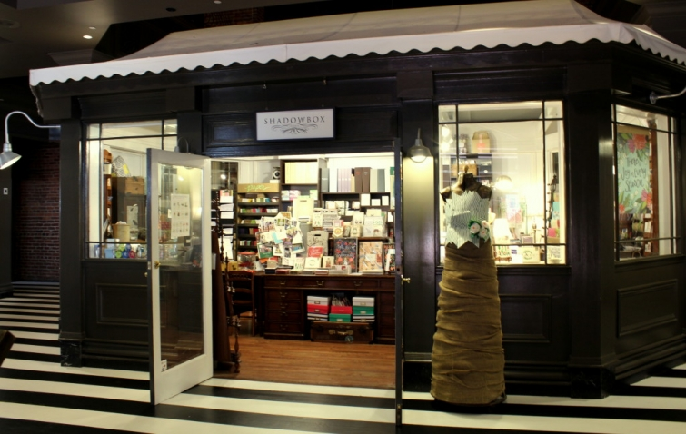

.png)
.PNG)
.PNG)
.PNG)
.PNG)
.PNG)
.JPG)
.JPG)
.PNG)
.PNG)


When you only have a few hours for a little retail therapy in Chattanooga, where do you go? Well, there are several places you could go…downtown, or to a couple of places in the Northshore area, or to the riverfront Aquarium area, or even to Main Street on the south side of town, but we thought it would be interesting to check out Warehouse Row when we were there a couple of months ago.
The massive building dates back to the Civil War when it was the Old Stone Fort, and then later it became textile warehouses. In the 1980’s it was turned into a shopping center, and in 2006 it was purchased by Jamestown LP. (They also own New York’s One Times Square and Chelsea Market.) When we were shopping in the new Ponce City Market in Atlanta right before Christmas, I thought…This reminds me so much of Warehouse Row in Chattanooga. Guess who owns Ponce City Market…
Yep, Jamestown LP. 🙂
Okay, that’s your history lesson for the day. Now let’s take a look at a few of the shops at Warehouse Row. First up, Shadowbox Paperie. This tiny shop has a great selection of charming cards, gifts, giftwrap, and more. This paper geek could stay in there for a loooooong time. 🙂
Walk a little further along that striped floor, and you will find….
 The Yves Delorme outlet. Inside it are all kinds of beautiful linens that you will want for your bedroom, bathroom, and dining room.
The Yves Delorme outlet. Inside it are all kinds of beautiful linens that you will want for your bedroom, bathroom, and dining room.
When you are finished shopping in there, walk around and study the very interesting decor in the hallways.
You will come to Lines Orchids next. If you are a gardener, I think I will just leave you in there. You will love all their plants and accessories!
One of the stores that I had heard so much about was Revival, so it was fun to be able to actually shop there.
It is very different from my traditional style with its mix of high end furnishings, antiques, and unusual objects… but still interesting to check out.
My favorite area of the store is the dish room.
Talk about eye candy!!
I am sure I could make room for all that Juliska dinnerware somewhere in the house. 🙂
Not far from Revival is the ultra preppy men’s store, Onward Reserved. My husband killed some time had fun browsing in there.
I am sure that by now, Onward Reserve has moved into its new location in Warehouse Row.
Love the sign in the window!
Of course, if you are at Warehouse Row, you must go in our daughter’s favorite store, Anthropologie.
While our daughter likes all their clothing, I always shop their home goods…
and study their ultra creative displays!
For clothing, I prefer the more tailored items at J Crew.
My very favorite thing in all of Warehouse Row is this wall. Isn’t it just wonderful?
(I need to find a place for something like that here. 🙂 )
When you finish all your shopping at Warehouse Row, you can eat dinner at Public House or Tupelo Honey (like we did. 🙂 )
One other evening we went to Manufacturer’s Road to check out Rock Creek (more my husband’s taste) and Whole Foods. (There is not one near us. 🙁 ) This was an area of Chattanooga that I think would appeal to both of our sons.
Although we did not have time to drive through neighborhoods while we were there, I did manage to take a couple of photos of some interesting architecture we saw.
I hope the next time we visit Chattanooga, we will have more time to really take in all that the city has to offer. From Lookout Mountain to the Aquarium to the Tennessee Valley Railroad, there are plenty of things to do. You can find more information about dining, shopping, where to stay, and where to play in Southern Living’s City Guide to Chattanooga here.
And I hope you are enjoying your weekend wherever you may be. I am working on some photography around here, and I’ll have a few decorating ideas for you coming up soon. 🙂
Until next time..


.PNG)
i have been to Chattanooga a few times and always go to a great antique mall there…I have taken note of these wonderful places on my next trip!…thanks Kelly!
That was fun!I enjoy shopping in unique places. I clicked on every store link. I am putting this on the list of places to go when Josie retires..in eight days!
——————————————————————–
8 days wow! I know she is excited. My husband thinks he has 11 more to go unless they offer him some major incentive to stay. Glad you enjoyed the virtual shopping. 🙂
Kelly
What a cool place to shop. I love that developers see vision in an old building, instead of putting up another boring mall that becomes nothing more than a ‘tween haven.
I had to wonder how many people stand there and take a photo of that recipe, or copy it down to keep for trying out. Neat wall! I have framed some of my MIL’s hand-written recipes, they are a hoot, because of her unique abbreviations and her tiny handwriting. She also typed some, (thank heaven! ) on my father in laws old typewriter. I have that typewriter, and it has some quirky keys that type heavier. I think it’s from WWII era, as that would have been the time he would have gotten it. I wish I had found out it’s history, but too late now.
I also would be spending an inordinate amount of time drooling over those dishes!
Thanks for the tour!
Looks like a good spot to walk around and get some inspiration or spend lots of dollars! 😉 I loved the old recipe wall! I’ve been wanting to frame an old one for awhile. Guess I need to get on that! 🙂 I have been up to Lookout Mountain and visited Ruby Falls once with two of my sisters-in-law and bro-in-law when we were driving back from the Miss Teen USA in Texas. We had gone to see our niece and since it was a long road trip we stopped at a few interesting spots like this. 🙂 My daughter went to college with the daughter of the owner of Rock City. We called her “Rock City Cindy.” 😉 It is beautiful up on the mountain. Now I want to go to Chattanooga!! 🙂
What a fascinating trip to Chattanooga! I’ve never been in that area, and your blog has given me a new appreciation for an area that I never really paid any attention to as far as shopping or eating or touring! Thanks so much – looks like much fun and shopping! God bless your husband who seems to be quite skilled at “killing time” LOL 🙂 Have a blessed week!!!
What great stores you visited. Love the displays at anthropologie!
I’m actually looking at real estate now in Chattanooga. Hoping to move from Memphis to that area soon. Thanks for the info.
Love Chattanooga! Born and raised there! Moved to the Atlanta area in 2005! Miss it!
Fun! Lines Orchids looks like my kind of place. Anthropologie is always fun to browse. I have to admit to liking some of their boho looking clothes, though I’d probably never wear them. I have found a top or two, but most of the clothes seem to be designed for sizes 2 to 6. I, too, like looking at their housewares and neat gifty things. They have a new store here (which was controversial – many would prefer to have only local stores and keep the chains out), but I haven’t shopped there yet since moving to the mountains.
The stores are absolutely amazing! I would love to do a little shopping there one day.
I think I could get lost in those shops. I don’t know if I could just spend a little time in each one. That would be torture!! I’ve been known to look at dishes for hours. What a nice trip. Thank you for sharing it with us. I really enjoyed it. I have traveled through Chattanooga several times and stayed there one weekend during college at my Aunt and Uncle’s home. That was many years ago. I know it has become quite a gem of the South. You certainly proved it!! Great post!
Sherry
What a great shopping destination. I love historic buildings and would need a few days to take in all the architecture, shopping and, of course, dining opportunities! Thanks for the tour, Kelly.
xo,
Karen
I loved this post! I wish more bloggers would share this kind of shopping fun! Thanks so much — you made my morning!
——————————————————————-
Thank YOU Kay!
Kelly
Kelly, I just went to Ponce City Market for the first time yesterday with my daughter. It was so crowded, but of course it was a beautiful Saturday and everyone was out. We didn’t go to all the shops since it took forever to just eat lunch, but I hope to go back. We went in West Elm, Williams Sonoma, Athropologie, Frye, and Madewell. I like some of the clothes at Antrho, but they have to be on sale. I too like J.Crew, but we didn’t go in there yesterday. We have driven through Chattanooga numerous times to go to our son’s in Nashville, but have never shopped there. May have to plan that either on the way up or back if I can talk hubby into it.
————————————————————————-
Isn’t it such a neat building?! I hate that it was so crowded for your visit. It sounds like you hit quite a few shops though. Love that Williams Sonoma there! Definitely make your husband stop..at least for lunch…in Chattanooga. I think you will like it, but I will say that Ponce City Market has more to offer than Warehouse Row (at least I think it does. 🙂 )
Kelly
Hi Kelly! It seems you enjoyed a very nice trip ! Shopping therapy is the best ! I should definitely include it to my Detox program 😉
———————————————————————-
Too funny Claire! Yes, we did enjoy our trip, and like you, shopping therapy does me good!
Kelly